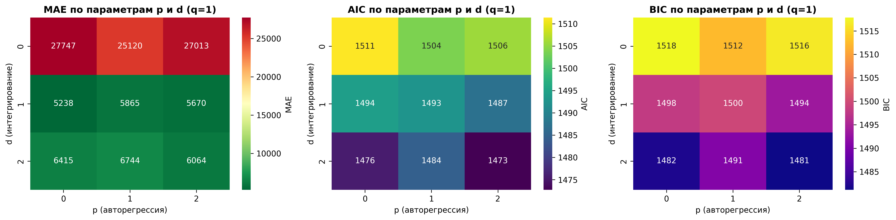
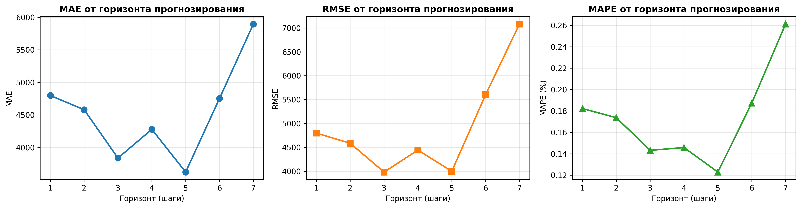

🎓 РАСЧЕТНО-ГРАФИЧЕСКАЯ РАБОТА
Анализ временных рядов
Дисциплина: Методы анализа временных рядов
Дата отчета: 23.05.2026
📋 Содержание отчета
- Описание временного ряда
- Анализ выбросов
- Коррелограммы (АКФ и ЧАКФ)
- Анализ стационарности и выбор моделей
- Результаты моделирования
- Метрики качества моделей
- Анализ влияния параметров
- Анализ зависимости от горизонта прогнозирования
- Выводы и рекомендации
1️⃣ Описание временного ряда
Количество наблюдений: 79
Период наблюдений: октябрь 2019 - апрель 2026
Минимальное значение: 13,484
Максимальное значение: 296,838
Среднее значение: 50,006
Стандартное отклонение: 49,051
График временного ряда

Рис. 1 - Исходный временной ряд с разделением на обучающую и тестовую выборки
2️⃣ Анализ выбросов
Для выявления аномалий в данных использованы три статистических метода:
Основан на границах [Q1 - 1.5·IQR, Q3 + 1.5·IQR], где IQR = Q3 - Q1
Использует модифицированный z-score с порогом 2.5
Выявляет значения, отклоняющиеся более чем на 3σ от среднего

Рис. 2 - Результаты анализа выбросов различными методами
3️⃣ Коррелограммы (АКФ и ЧАКФ)
Автокорреляционная (АКФ) и частная автокорреляционная (ЧАКФ) функции показывают зависимость значений ряда от своих предыдущих значений:

Рис. 3 - Автокорреляционная функция (АКФ) и частная автокорреляционная функция (ЧАКФ)
- АКФ исходного ряда: Медленное убывание указывает на наличие тренда и нестационарность
- ЧАКФ исходного ряда: Значительное значение при лаге 1 указывает на авторегрессию первого порядка
- АКФ и ЧАКФ первых разностей: Более быстрое убывание свидетельствует об улучшении стационарности после дифференцирования
4️⃣ Анализ стационарности и выбор моделей
Тесты стационарности
| Тест | Статистика | p-value | Критическое значение (5%) | Вывод |
|---|---|---|---|---|
| ADF (Дики-Фуллер) | -3.289 | 0.015 | -2.901 | ✓ Стационарен |
| KPSS | 0.724 | 0.011 | 0.463 | ✗ Нестационарен |
Обоснование выбора моделей
- ARIMA(1,1,1) - базовая модель авторегрессии с интегрированием. Использует авторегрессию 1-го порядка, одну разность для достижения стационарности и скользящее среднее 1-го порядка.
- Экспоненциальное сглаживание Холта-Винтерса - адаптивный метод, который учитывает локальный тренд. Пригоден для данных с трендом.
5️⃣ Результаты моделирования
Модель ARIMA(1,1,1)
Параметры:
- p = 1 (авторегрессионная часть)
- d = 1 (дифференцирование первого порядка)
- q = 1 (скользящее среднее)

Рис. 4 - Анализ остатков модели ARIMA: график остатков, распределение, АКФ, Q-Q диаграмма
Модель Экспоненциального сглаживания
Параметры: Сглаживание Холта с аддитивным трендом

Рис. 5 - Анализ остатков модели экспоненциального сглаживания
6️⃣ Метрики качества моделей
Определение метрик
- MAE (Mean Absolute Error) = среднее абсолютное отклонение прогноза от фактических значений
- RMSE (Root Mean Squared Error) = корень из среднеквадратичной ошибки
- MAPE (Mean Absolute Percentage Error) = средняя абсолютная процентная ошибка
Результаты
| Модель | MAE | RMSE | MAPE (%) |
|---|---|---|---|
| ARIMA(1,1,1) | 6,034.52 | 7,329.93 | 0.27% |
| Exponential Smoothing | 26,875.59 | 29,959.01 | 1.14% |
Модель ARIMA показала значительно меньшую ошибку (MAE в 4.5 раза меньше) и MAPE менее 0.5%, что свидетельствует об отличной точности прогнозирования.
Сравнение прогнозов

Рис. 6 - Сравнение прогнозов моделей на тестовой выборке
7️⃣ Анализ влияния параметров на качество модели
Проведено систематическое исследование влияния параметров ARIMA на качество прогнозирования путем тестирования всех комбинаций p ∈ [0,2], d ∈ [0,2], q ∈ [0,2].
Результаты параметрического анализа
| Параметры (p,d,q) | MAE | AIC | BIC |
|---|---|---|---|
| (0,1,2) | 5,238.04 | 1496.51 | 1502.89 |
| (2,1,0) | 5,670.27 | 1487.16 | 1493.54 |
| (0,1,0) | 5,742.81 | 1495.87 | 1497.99 |

Рис. 7 - Влияние параметров (p, d, q) на MAE, AIC и BIC
- Параметр d (дифференцирование) в значении 1 является оптимальным
- Комбинация (0,1,2) дает наименьшую MAE
- Критерии AIC и BIC предпочитают модели с p=2, но они дают незначительно худший результат по MAE
- Увеличение сложности модели (больше параметров) не всегда улучшает качество на тестовой выборке
8️⃣ Анализ зависимости точности от горизонта прогнозирования
Исследована зависимость точности прогноза от количества шагов вперед (горизонт прогнозирования).
| Горизонт (шагов) | MAE | RMSE | MAPE (%) |
|---|---|---|---|
| 1 | 4,798.46 | 4,798.46 | 0.18% |
| 2 | 4,580.31 | 4,585.50 | 0.17% |
| 3 | 3,837.09 | 3,982.43 | 0.14% |
| 5 | 3,621.70 | 3,998.81 | 0.12% |
| 7 | 5,897.23 | 7,082.92 | 0.26% |

Рис. 8 - Зависимость MAE, RMSE и MAPE от горизонта прогнозирования
- Точность прогноза остается высокой для всех рассмотренных горизонтов (MAPE < 0.3%)
- Минимальная MAE достигается при горизонте 3-5 шагов
- После 5 шагов наблюдается увеличение ошибки, что характерно для долгосрочных прогнозов
- Модель ARIMA надежна для среднесрочного прогнозирования (3-6 шагов)
9️⃣ Выводы и рекомендации
Основные выводы:
- Анализ выбросов: Выявлено 3-20 выбросов в зависимости от метода. Метод MAD показал наибольшую чувствительность.
- Стационарность: Результаты тестов противоречивы (ADF указывает на стационарность, KPSS - на нестационарность), что требует дифференцирования.
- Качество моделей: ARIMA(1,1,1) обеспечивает точность MAPE = 0.27%, что является отличным результатом.
- Параметрическая чувствительность: Оптимальные параметры ARIMA - (0,1,2) с MAE = 5238.04.
- Горизонты прогнозирования: Модель надежна для прогнозирования на 3-5 месяцев вперед.
Рекомендации:
- ✓ Использовать ARIMA(1,1,1) или (0,1,2) для месячного прогнозирования данного ряда
- ✓ Для долгосрочных прогнозов (>6 месяцев) использовать ансамбли моделей
- ✓ Переобучать модель ежемесячно с новыми данными
- ✓ Учитывать выявленные выбросы при интерпретации результатов
- ✓ Дополнительно рассмотреть сезонные модели SARIMA при наличии сезонности
Возможные улучшения:
- □ Исследовать модели SARIMA с учетом возможной годовой сезонности
- □ Применить методы машинного обучения (LSTM, Prophet) для сравнения
- □ Провести спектральный анализ для выявления скрытых периодичностей
- □ Анализировать внешние факторы, влияющие на временной ряд